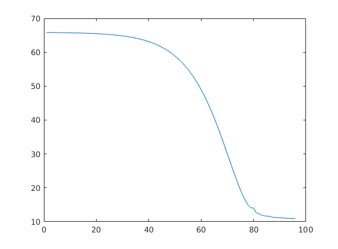

Contents
MyMainScript
my_num_of_colors = 256;
col_scale = [0:1/(my_num_of_colors-1):1]';
my_color_scale = [col_scale,col_scale,col_scale];
to_save = 1;
is_color = 0;
phantom_data = load('../../data/assignmentImageDenoisingPhantom.mat');
phantom_noisy = phantom_data.imageNoisy;
phantom_noiseless = phantom_data.imageNoiseless;
tic;
Original Noisy and Noiseless Data
savefig(my_color_scale,abs(phantom_noisy),"Noisy","noisy.png",is_color,to_save);
savefig(my_color_scale,abs(phantom_noiseless),"Noiseless","noiseless.png",is_color,to_save);
rrmse = RRMSE(phantom_noiseless, phantom_noisy);
disp("RRMSE Value between noisy and noiseless : ");
disp(rrmse);
RRMSE Value between noisy and noiseless :
0.2986
Applying Denoising ALgorithms with different priors
step_size = 0.001;
sig = 1;
max_iter = 100;
Quadratic Prior %
disp("Quadratic Prior");
disp("%%%%%%%%%%%%%%%%%%%%%%%%%%%%%%%%%%%%%%%%%%%%%%%%%%%%%%%%%%");
alfa_best = 0.78;
gam = 0.5;
prior = "quadratic";
[denoised_img_quad,loss_list] = denoiser(phantom_noisy,alfa_best,step_size,max_iter,sig,gam,prior);
savefig(my_color_scale,abs(denoised_img_quad),"Quadratic Prior Denoised","quadratic_denoised.png",is_color,to_save);
fig = figure;
plot(loss_list);
saveas(fig, "Quadratic loss-vs-iterations.png")
quad_rrmse = RRMSE(phantom_noiseless,denoised_img_quad);
fprintf("best_alpha= %f\n", alfa_best);
fprintf("RRMSE= %f \n", quad_rrmse);
[denoised_img_quad,loss_list] = denoiser(phantom_noisy,0.8*alfa_best,step_size,max_iter,sig,gam,prior);
quad_rrmse = RRMSE(phantom_noiseless,denoised_img_quad);
fprintf("0.8 times best_alpha= %f\n", 0.8*alfa_best);
fprintf("RRMSE= %f \n", quad_rrmse);
[denoised_img_quad,loss_list] = denoiser(phantom_noisy,1.2*alfa_best,step_size,max_iter,sig,gam,prior);
quad_rrmse = RRMSE(phantom_noiseless,denoised_img_quad);
fprintf("1.2 times best_alpha= %f\n", 1.2*alfa_best);
fprintf("RRMSE= %f \n", quad_rrmse);
Quadratic Prior
%%%%%%%%%%%%%%%%%%%%%%%%%%%%%%%%%%%%%%%%%%%%%%%%%%%%%%%%%%
best_alpha= 0.780000
RRMSE= 0.210082
0.8 times best_alpha= 0.624000
RRMSE= 0.227957
1.2 times best_alpha= 0.936000
RRMSE= 0.244911
Huber Prior %
disp("Huber Prior ")
disp("%%%%%%%%%%%%%%%%%%%%%%%%%%%%%%%%%%%%%%%%%%%%%%%%%%%%%%%%%%");
alfa_best = 0.15;
gam_best = 0.02;
prior = "huber";
[denoised_img_huber,loss_list] = denoiser(phantom_noisy,alfa_best,step_size,max_iter,sig,gam_best,prior);
savefig(my_color_scale,abs(denoised_img_huber),"Huber Prior Denoised","huber_denoised.png",is_color,to_save);
fig = figure;
plot(loss_list);
saveas(fig, "Huber loss-vs-iterations.png")
huber_rrmse = RRMSE(phantom_noiseless,denoised_img_huber);
fprintf("best_alpha= %f, best_gamma= %f\n", alfa_best, gam_best);
fprintf("RRMSE= %f \n", huber_rrmse);
[denoised_img_huber,loss_list] = denoiser(phantom_noisy,0.8*alfa_best,step_size,max_iter,sig,gam_best,prior);
huber_rrmse = RRMSE(phantom_noiseless,denoised_img_huber);
fprintf("0.8 times best_alpha= %f\n", 0.8*alfa_best);
fprintf("RRMSE= %f \n", huber_rrmse);
[denoised_img_huber,loss_list] = denoiser(phantom_noisy,1.2*alfa_best,step_size,max_iter,sig,gam_best,prior);
huber_rrmse = RRMSE(phantom_noiseless,denoised_img_huber);
fprintf("1.2 times best_alpha= %f\n", 1.2*alfa_best);
fprintf("RRMSE= %f \n", huber_rrmse);
[denoised_img_huber,loss_list] = denoiser(phantom_noisy,alfa_best,step_size,max_iter,sig,0.8*gam_best,prior);
huber_rrmse = RRMSE(phantom_noiseless,denoised_img_huber);
fprintf("0.8 times best_gamma= %f\n", 0.8*gam_best);
fprintf("RRMSE= %f \n", huber_rrmse);
[denoised_img_huber,loss_list] = denoiser(phantom_noisy,alfa_best,step_size,max_iter,sig,1.2*gam_best,prior);
huber_rrmse = RRMSE(phantom_noiseless,denoised_img_huber);
fprintf("1.2 times best_gamma= %f\n", 1.2*gam_best);
fprintf("RRMSE= %f \n", huber_rrmse);
Huber Prior
%%%%%%%%%%%%%%%%%%%%%%%%%%%%%%%%%%%%%%%%%%%%%%%%%%%%%%%%%%
best_alpha= 0.150000, best_gamma= 0.020000
RRMSE= 0.072827
0.8 times best_alpha= 0.120000
RRMSE= 0.073059
1.2 times best_alpha= 0.180000
RRMSE= 0.077260
0.8 times best_gamma= 0.016000
RRMSE= 0.073023
1.2 times best_gamma= 0.024000
RRMSE= 0.076425
Disconitnuity Adaptive Prior %
disp("Disconitnuity Adaptive Prior ");
disp("%%%%%%%%%%%%%%%%%%%%%%%%%%%%%%%%%%%%%%%%%%%%%%%%%%%%%%%%%%");
alfa_best = 0.008;
gam_best = 0.0024;
prior = "discon_adap";
[denoised_img_disc_adap,loss_list] = denoiser(phantom_noisy,alfa_best,step_size,max_iter,sig,gam_best,prior);
savefig(my_color_scale,abs(denoised_img_disc_adap),"Disconitnuity Adapt Prior Denoised","discon_adap_denoised.png",is_color,to_save);
fig = figure;
plot(loss_list);
saveas(fig, "discon_adap loss-vs-iterations.png");
disc_adap_rrmse = RRMSE(phantom_noiseless,denoised_img_disc_adap);
fprintf("best_alpha= %f, best_gamma= %f\n", alfa_best, gam_best);
fprintf("RRMSE= %f \n", disc_adap_rrmse);
[denoised_img_disc_adap,loss_list] = denoiser(phantom_noisy,0.8*alfa_best,step_size,max_iter,sig,gam_best,prior);
disc_adap_rrmse = RRMSE(phantom_noiseless,denoised_img_disc_adap);
fprintf("0.8 times best_alpha= %f\n", 0.8*alfa_best);
fprintf("RRMSE= %f \n", disc_adap_rrmse);
[denoised_img_disc_adap,loss_list] = denoiser(phantom_noisy,1.2*alfa_best,step_size,max_iter,sig,gam_best,prior);
disc_adap_rrmse = RRMSE(phantom_noiseless,denoised_img_disc_adap);
fprintf("1.2 times best_alpha= %f\n", 1.2*alfa_best);
fprintf("RRMSE= %f \n", disc_adap_rrmse);
[denoised_img_disc_adap,loss_list] = denoiser(phantom_noisy,alfa_best,step_size,max_iter,sig,0.8*gam_best,prior);
disc_adap_rrmse = RRMSE(phantom_noiseless,denoised_img_disc_adap);
fprintf("0.8 times best_gamma= %f\n", 0.8*gam_best);
fprintf("RRMSE= %f \n", disc_adap_rrmse);
[denoised_img_disc_adap,loss_list] = denoiser(phantom_noisy,alfa_best,step_size,max_iter,sig,1.2*gam_best,prior);
disc_adap_rrmse = RRMSE(phantom_noiseless,denoised_img_disc_adap);
fprintf("1.2 times best_gamma= %f\n", 1.2*gam_best);
fprintf("RRMSE= %f \n", disc_adap_rrmse);
toc;
function savefig(my_color_scale,modified_pic,title_name,file_name,is_color,to_save)
if to_save==1
fig = figure('units','normalized','outerposition',[0 0 1 1]); colormap(my_color_scale);
else
fig = figure; colormap(my_color_scale);
end
if is_color == 1
colormap jet;
else
colormap(gray);
end
imagesc(modified_pic), title(title_name), colorbar, daspect([1 1 1]), axis tight;
impixelinfo();
if to_save == 1
end
end
Disconitnuity Adaptive Prior
%%%%%%%%%%%%%%%%%%%%%%%%%%%%%%%%%%%%%%%%%%%%%%%%%%%%%%%%%%
best_alpha= 0.008000, best_gamma= 0.002400
RRMSE= 0.061973
0.8 times best_alpha= 0.006400
RRMSE= 0.061987
1.2 times best_alpha= 0.009600
RRMSE= 0.062150
0.8 times best_gamma= 0.001920
RRMSE= 0.062666
1.2 times best_gamma= 0.002880
RRMSE= 0.062525
Elapsed time is 41.726716 seconds.
